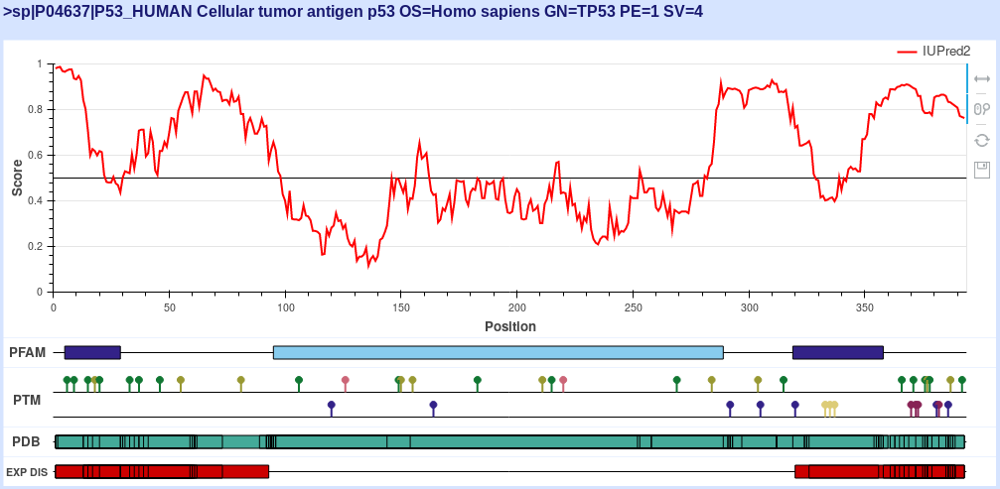
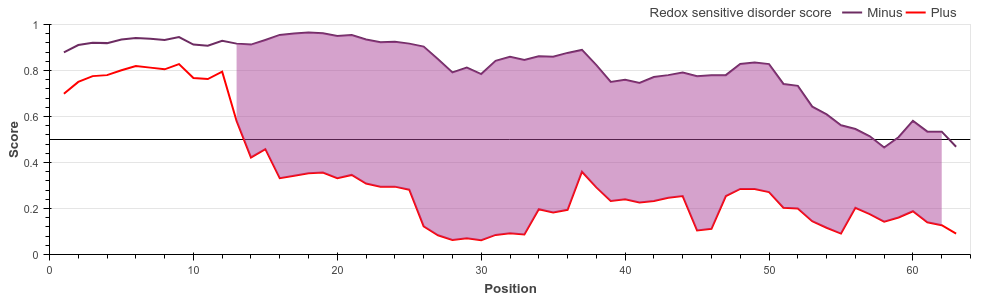
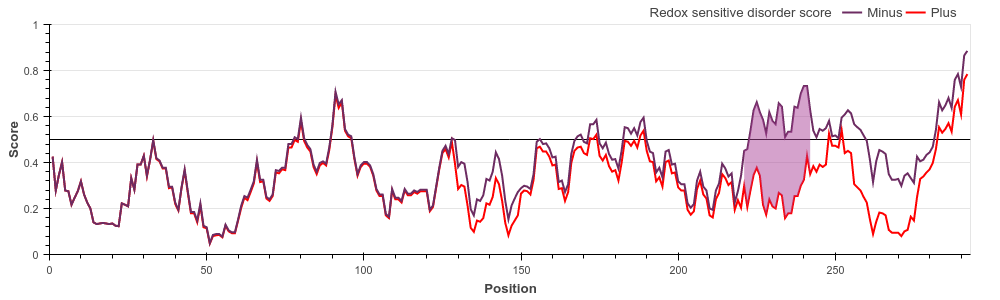
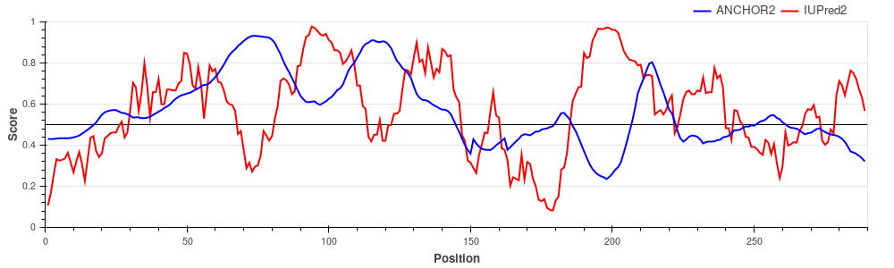
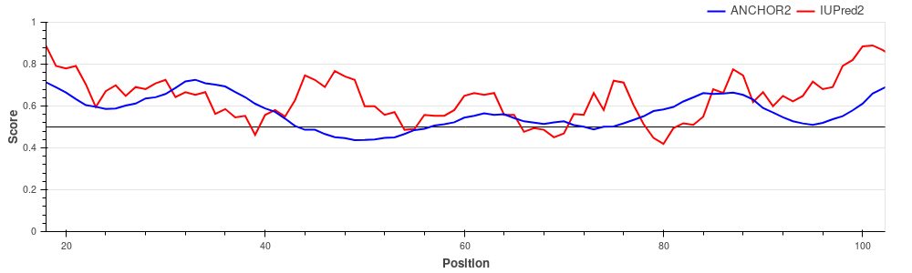
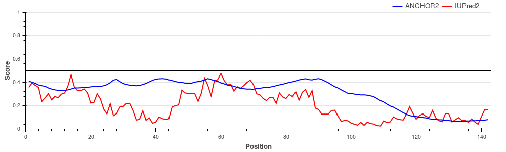

Prediction of Intrinsically Unstructured Proteins
ExamplesThe following examples highlight the functionality of IUPred2A in the identification of various forms of protein disorder. All figures are reproducible using IUPred2A by simply entering the given UniProt ID and selecting the corresponding options. Human p53 (UniProt ID: P04637) 
p53 is a tumor suppressor protein involved in apoptosis, cell cycle control and
transcription regulation. It
consists of the disordered N-terminal and C-terminal parts and the central largely ordered
DNA binding domain. Cytochrome c oxidase copper chaperone (UniProt ID: Q14061) 
COX17 is a critically important subunit of the human cytochrome c oxidase. COX17 is a
cystein-rich protein, and the redox
state of these cysteine residues (and hence their role in protein stability) is highly
dependent on the sub-cellular localization
of the protein. Upon entring the oxidative environment of the mitochondrium, COX17 undergoes
a disorder-to-order transition,
forming a stable coiled-coil/helix/coiled-coil/helix structure (see Banci et
al.) E. coli 33 kDa chaperonin (Hsp33) (UniProt ID: P0A6Y5) 
Hsp33 belongs to the holdase class of molecular chaperones. The activity of Hsp33 depends on
oxidative conditions, however, for this protein the functional state is disordered. Under
non-stress conditions, Hsp33 is a compactly folded zinc-binding protein with negligible
activity. Oxidative stress causes the formation of two intramolecular disulfide bonds and
the release of Zn2+ ions. This leads to the unfolding of the zinc-binding domain, exposing
the substrate binding surface of the chaperone that is necessary for its activity. Early E1A protein (UniProt ID: P03255)  Human adenovirus C early E1A protein is a largely disordered protein essential for forcing the human host cell into S phase via modulation of the Rb1/E2F1 pathway and the inhibition of apoptosis via modulation of p53 degradation. These host-pathogen interactions are mediated by several binding events. Rb1 and CBP are targeted by two N-terminal tandem binding sites with determined complex structures deposited in the PDB, shown in green and red boxes. These known disordered binding regions are identified by ANCHOR2 as two distinct neighbouring peaks in the output score. While no other E1A- human protein complexes are currently known in structural detail, E1A harbors two additional known motifs between residues 113-126 capable of forming host-specific interactions. Both motifs, together with the putative binding site for the deubiquitinase UBE2I between residues 76-140 are correctly recognized by ANCHOR2 as a separate peak in the prediction score. A distinct peak C-terminal around residue 220 has no known binding partners; however it entails a serine residue that was shown to be heavily phosphorylated by host kinases, hinting at an additional important binding region with currently limited characterization. p27/Cyclin-dependent kinase inhibitor 1B (UniProt ID: P46527) 
p27 is one of the major regulators of cell cycle progression, being an inhibitor of the
CDK2/cyclinA complex. p27 is fully disordered and
binds to the target complex using a large extended interface harboring several strongly
binding regions interspersed with weak binding linkers. Hemoglobin subunit alpha (UniProt ID: P69905)  Hemoglobin subunits are globular proteins, lacking disordered regions and thus lacking disordered binding regions as well. The figure shows that both the IUPred2 prediction (red line) and ANCHOR2 predictions (blue line) are consistent with this fact, predicting no disorder or disordered binding regions in the protein. |
References:Bálint Mészáros, Gábor Erdős, Zsuzsanna DosztányiIUPred2A: context-dependent prediction of protein disorder as a function of redox state and protein binding Nucleic Acids Research 2018;46(W1):W329-W337. Zsuzsanna Dosztányi Prediction of protein disorder based on IUPred Protein Science 2017;27:331-340. Dosztányi Z, Csizmók V, Tompa P, Simon I. The pairwise energy content estimated from amino acid composition discriminates between fol$ and intrinsically unstructured proteins. J Mol Biol. 2005;347:827-39. Mészáros B, Simon I, Dosztányi Z. Prediction of protein binding regions in disordered proteins. PLoS Comput Biol. 2009;5:e1000376. |